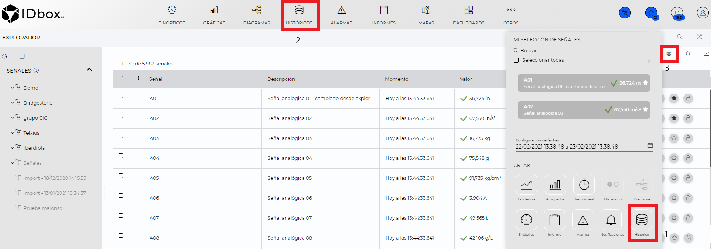
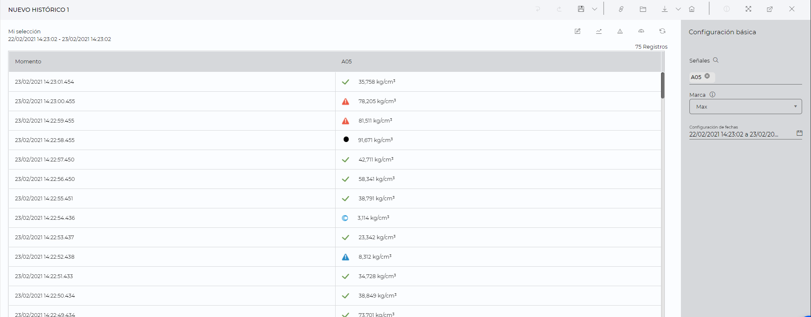
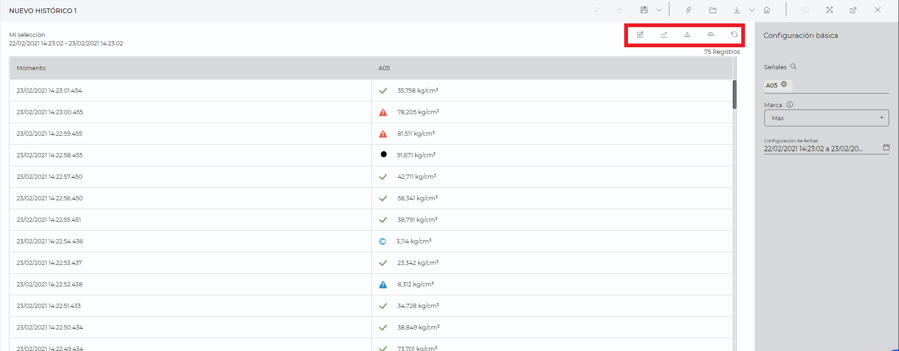
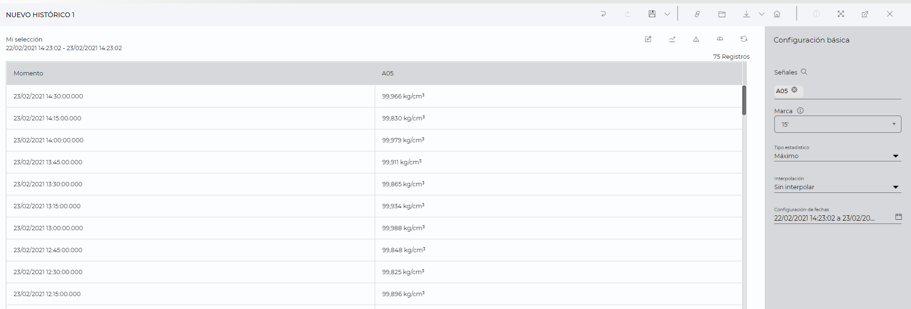
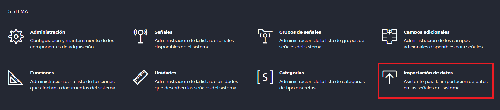
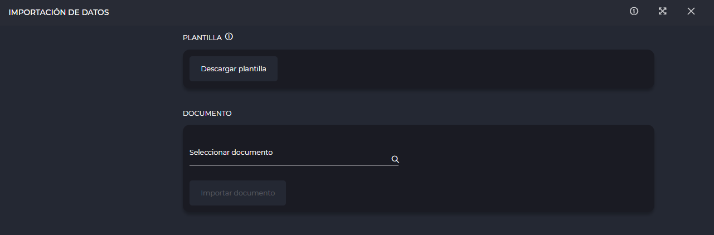

HISTORICAL
1. Introduction
From the historical data document we can view the list of historical data of one or several signals, selecting the time interval to be displayed, as well as the resolution of the data.
History documents can be created from the launcher (1), from the shortcut (2) or from shortcuts.

1) To create a history document from the launcher you need to have signals in “My signal selection”, select the signals you want to analyze click on " Historicals".
In the signals section of the explorer, by clicking on the button, that signal will be added to “My signal selection”.
2) Clicking on the historical shortcut will open the wizard for creating a new document, in which we will have to perform the following actions:
- Signals: You have to select one signal as minimum and as maximum the value configured in the configuration file will be used.
- Dates: Allows to select the document dates configuration.
Once the initial configuration is set, the list of historical data will be displayed on the screen.
3) From the shortcuts section, clicking on the " Historicals" button will open a new historical document with the selected signals and with a period of one day.
Once the history document is created, the historical data will be displayed in the central part and the configuration related to the data to be displayed will be shown in the right panel.

2 Visualization of historical data
In the central part we will be able to see a list of the historical data of the selected points and with the established configuration.
The following quick actions can be performed:
1) Edit raw sample : Enables raw data editing, clicking on the value to be changed will enable cell editing for us to enter a new value.
2) Tendency : Allows us to create a trend chart with the signals and date range we have set in the document.
3) Alarms : Allows to create an alarm document with the signals and date range we have set in the document.
4) Statistical : Switches the view to the statistics display.
5) Reload : Reloads the data to be displayed.
6) Permalink : Allows to generate a link to directly access the document.
*The actions “Edit raw data”, “Statistics” and “Alarms” are not available for functions.

The following fields are shown in the data table:
- Moment: Moment in which the data has been generated.
- Signals: We will visualize as many columns as signals we have added to the document, in this column the data will be shown together with the icon of the most priority associated status, if we place the cursor over the icon a tooltip will appear indicating the aliases of the associated statuses.
3 Configuration
Through the right side panel we can modify the configuration of the document, as well as the data to be displayed.
The configuration that we can modify is the following:
- Signals: Allows you to add or remove signals to the document.
- Mark: Allows to select the frequency for which the data will be displayed. If the resolution is greater than “Max” it will be statistical data, otherwise it will be raw data. The Auto option allows the mark to be adjusted dynamically according to the selected time period. It will be possible to write marks higher than the last displayed mark, if the written mark is hours it will be adjusted to a divisor of 24 hours. Example: If 7 hours are entered, it will be automatically changed to 8 hours. If 10 hours are entered, it will automatically change to 12 hours.
- Date setting: Allows you to select the time interval for which the data will be displayed. You can type the dates in the text field or click on the calendar to open the date selector.
If the mark entered is greater than the maximum, new configuration parameters will appear, referring to interpolation and statistical type:
-
Statistical type: allows to select the statistical type. The options will depend on the type of signal selected:
- Analog signals: mean, maximum, minimum, variance, standard deviation, count, cumulative, maximum and minimum and standard deviation with respect to the mean.
- Digital signals: Count, mode, count of boolean values true and count of values false.
- Discrete signals: count and mode.
- Functions: The selection of static types is not available for functions**.
-
Interpolation: Allows to select the interpolation to be applied. It can be No interpolation, Linear, Step before and Step after.

4 Data import
Apart from editing the raw data or using the different data acquisition techniques available for signal historical management, it is also possible to perform a spreadsheet import. This operation is available from its Control Panel option that is shown below.

Once it is opened, the different data import management sections are available, as shown in the following image and described below.

-
Template: A spreadsheet that sets the structure for including the data to be imported into the system. The download will start by clicking on the button displayed at the top. It is important to take into account the following aspects:
- Involved signals must be included in a data recorder service.
- A properly formatted time zone must be provided. For instance: “UTC+2 Romance Standard Time”.
-
Document selection: Once the template has been completed with the desired data, it can be selected in the next step so the import process can be started by clicking on its closest button. If the operation is completed correctly, the data will be recorded and accessible from the system - otherwise, it will be necessary to check the template document before repeating the process.